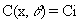

5.0 AIR AS SOURCE
The air-as-source component is an input option that allows the investigator
to input a uniform regional air concentration of a contaminant. The exposure
pathways are computed based on having the same concentrations and deposition
rate everywhere over the region. That is,

where C(x,q) is the air concentration at any arbitrary distance, x, and direction,q(degrees); and Ci is the input value
for ambient air concentrations (g/m3).
Applications for the air-as-source component are mainly for evaluation
of background concentrations from sources of distant and/or poorly defined
origin. The air-as-source component may also be used to approximately evaluate
impacts from a disperse regional source term such as roadways.